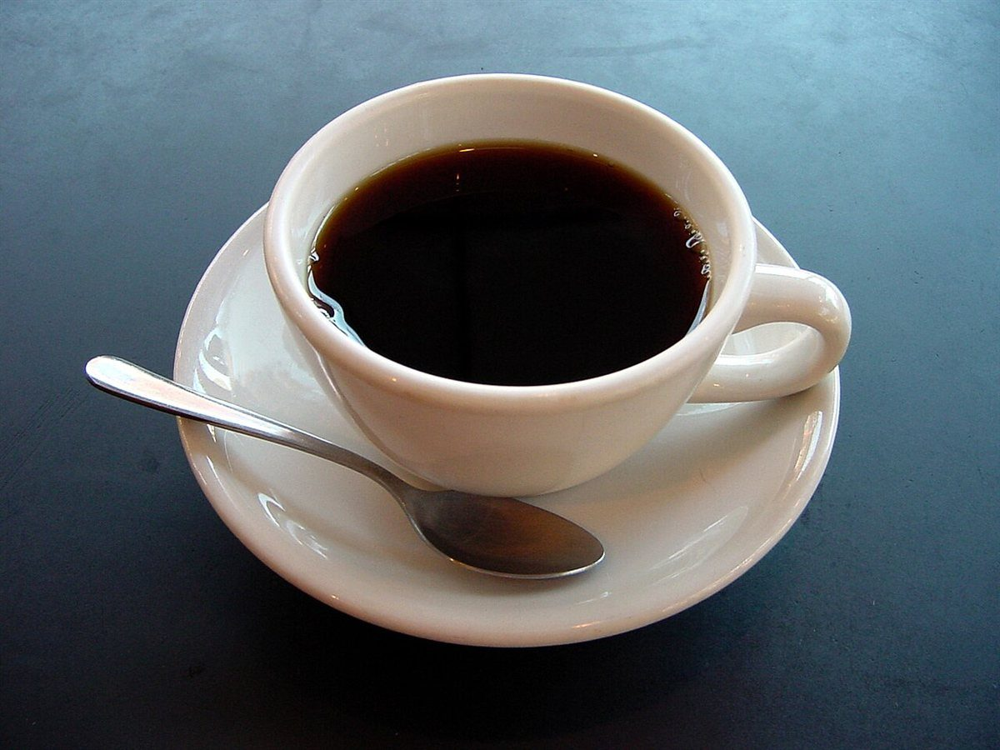

名前の響きが気になって、Instagramを開いてみました。写真を見ながら、いつ行こうかと考えています。
J ♣ 口コミ
三枚引く口コミ
以下は制作側が書いた創作で、実在のお客様の投稿ではありません。お店のサービス内容を示すものでもありません。
落ち着いてコーヒーを飲む時間が欲しいときに、思い出すお店になりそうです。次の休みにゆっくり訪ねてみたいです。
友人に「ここ気になる」と教えたくなる雰囲気のページでした。行く前に最新の情報をInstagramで確かめます。
口コミのイメージ例です。実際のお客様の声は、お店のご確認のうえ差し替えます。
